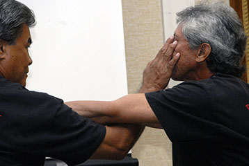

Pa Lua or simply Lua, is an unarmed martial art strictly exclusive to the Koa. It focuses on kuikui (punching), peku (kicking), hakihaki (bone-breaking), hakoko (wrestling), aalolo (pressure point attacks), and healing. It is usually practiced in secret at night so outsiders can't learn its ways. In keeping the same fighting style of the Koa, Pa Lua is fast paced and focuses on quickly incapacitating one's foe.
